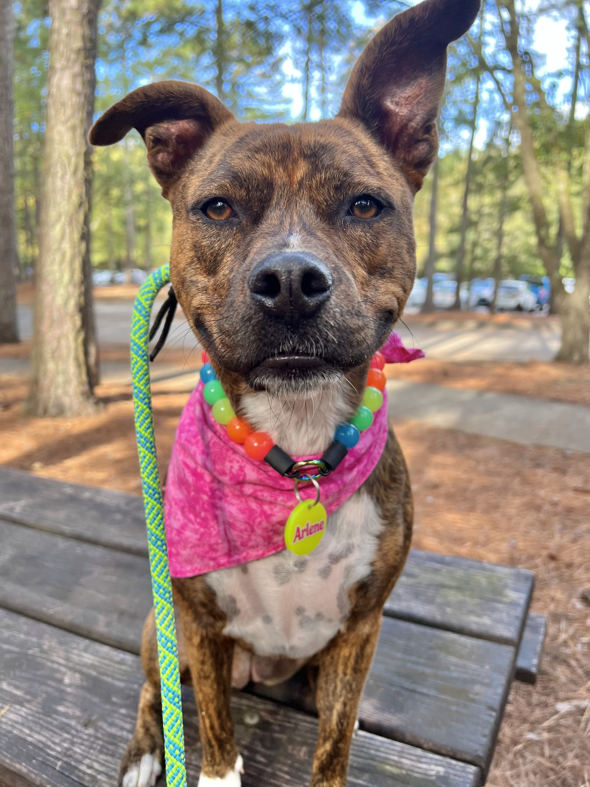
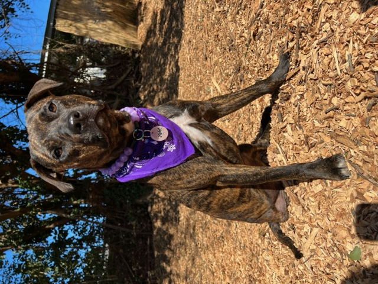
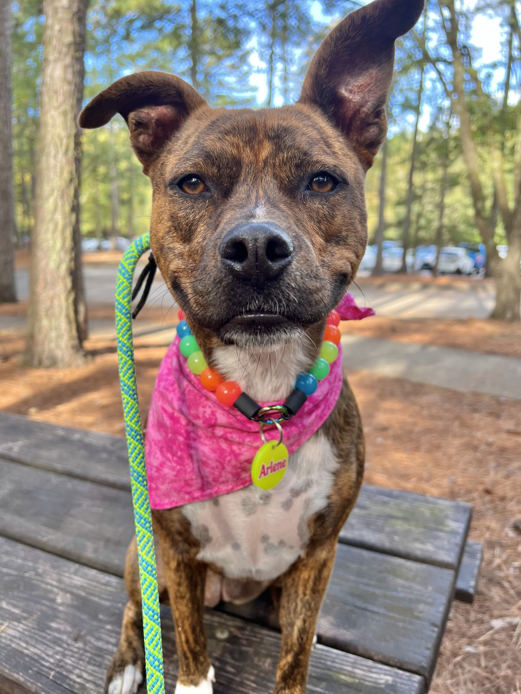
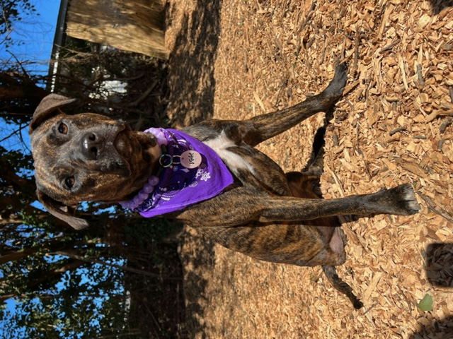

DOGNOSTIC
Welcome to the one stop shop for all the info and photos you'll need to decide what dog breed or breed mix is right for you!
Search by Breed
The Plott Hound is a cunning and confident big-game hunting dog with a fierce and tenacious nature on the trail and an even, affectionate and loyal temperament in the home. They hail from the mountains of western North Carolina and are the only coonhound breed not descended from the Foxhound. They stands out for their speed and spirit. If you want a dog that can hunt anything from raccoon to bear, the Plott is for you.
 


